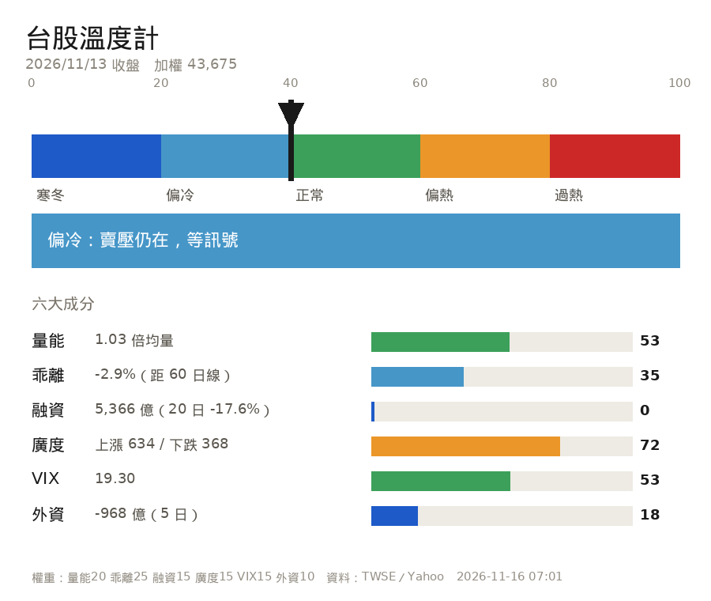
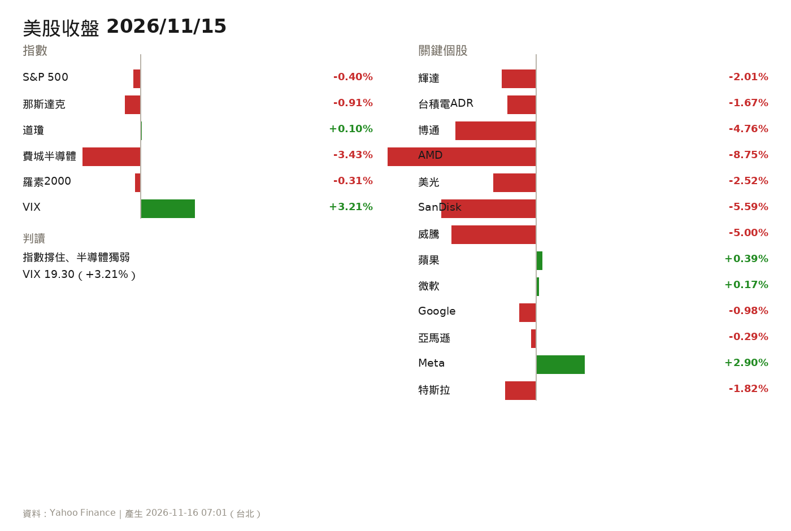
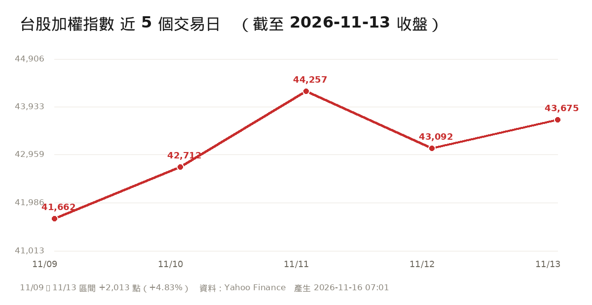
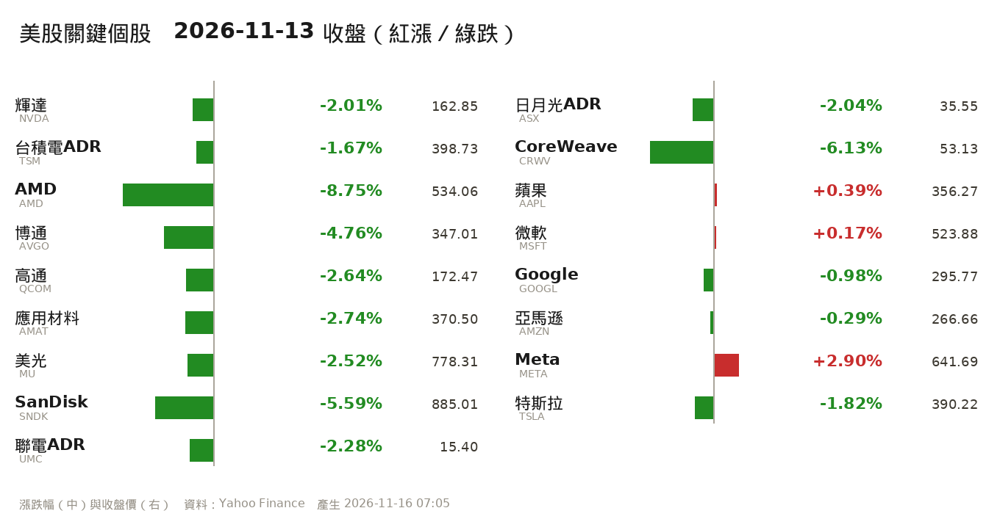
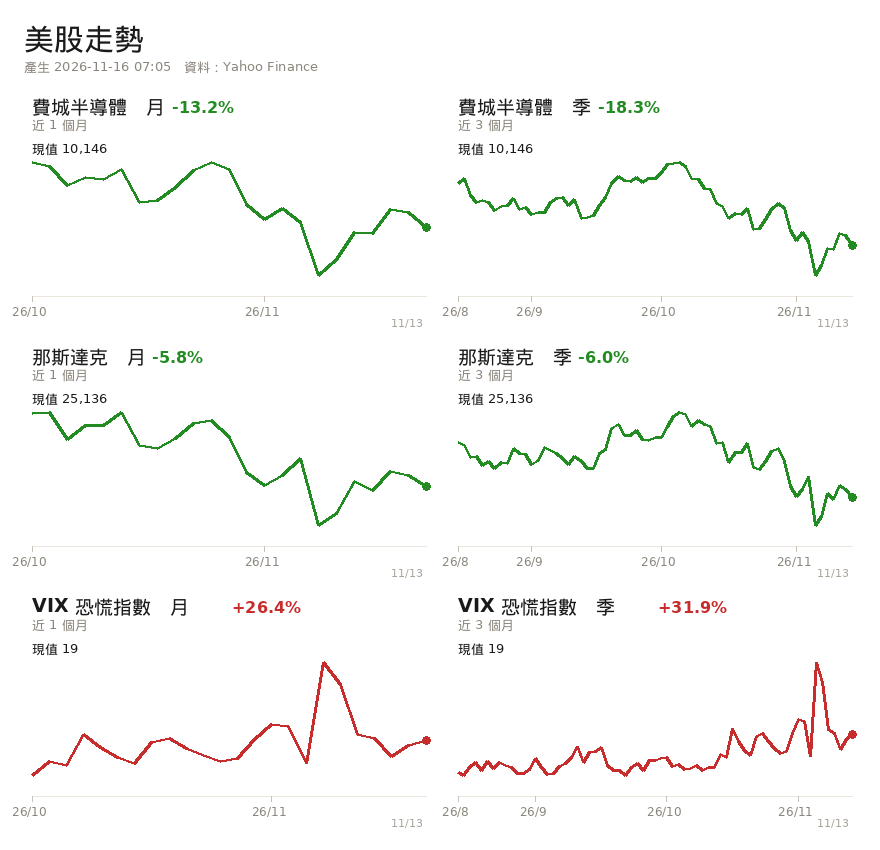
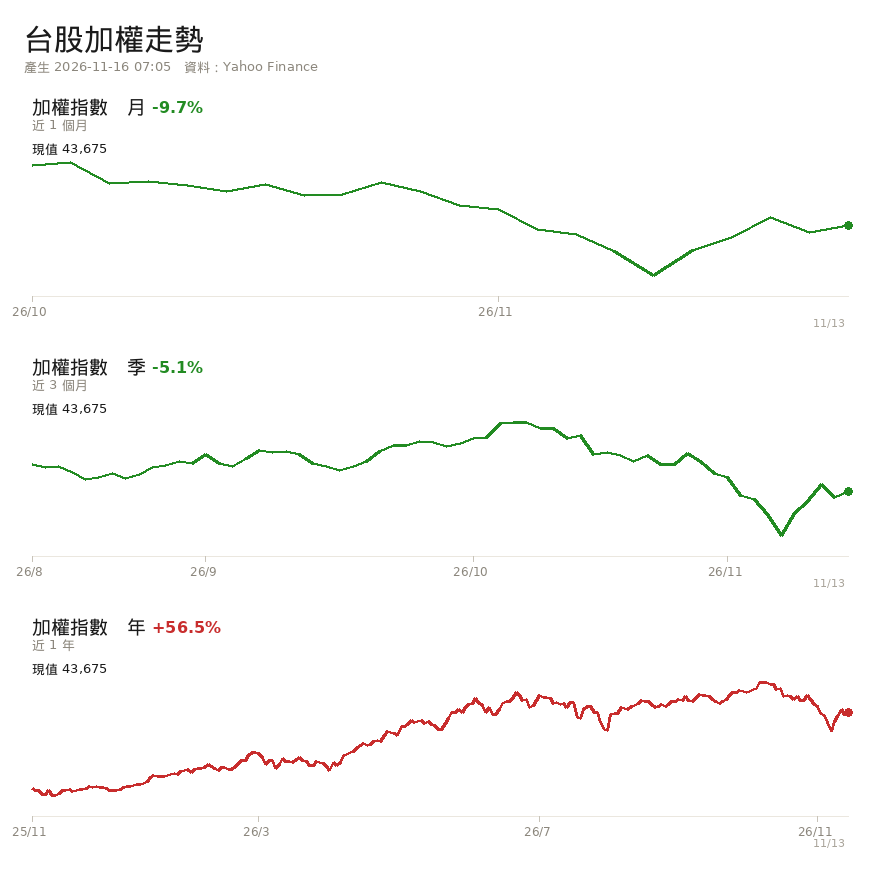
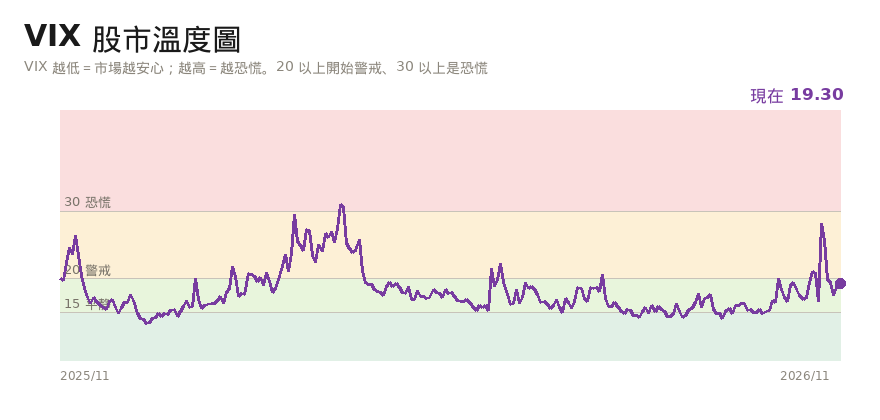

2026-11-16 投資日報2026-11-16 07:00
今天是週一。台股上週五（11/13）收 43,675.12，今天 09:00 才開盤；美股最後交易日也是 11/13（五），今天早上沒有新的美股收盤。本報的價格全部是 11/13 收盤，不是今早的價格。
重點提醒｜Emmy（持續中）
來源：
財經頻道/Emmy追劇時間/Emmy重點提醒追蹤.md。未解除就會每天出現；判定解除當天標「過期」，隔天起不再列出。
- E1 輝達 NVDA／黃仁勳 真正風險不是技術洩密，是「走私晶片＋長期遊說晶片禁令」的國安問題。已持續 4 天。⬆️ 惡化：11/16 仍無新貼文（最新 11/13），但外部證據變多──《華爾街日報》專題指輝達「雲端合作夥伴計畫」形同黃仁勳偏愛名單、Megaspeed 的大客戶是阿里巴巴（粉專轉述，未經司法認定）；國會時程排定 11/18 向眾院三個委員會簡報、12/1 閉門逐字訊問、12/2 法務長 Teter、12/3 參院銀行委員會公開聽證（粉專整理，未經官方確認）。另一邊《金融時報》報導矽谷盟友組「戰情室」遊說黃仁勳復職、他本人也在考慮，但財長貝森特說要從「外部」找接班人 → 復職可能遭華府反對。輝達 11/13 收 162.85（-2.01%），上週 -13%、六週連黑（2012 年以來最長），市值跌破 4 兆美元。11/17 盤後（台灣 11/18 清晨）是沒有黃仁勳的第一份財報：共識營收約 1,090~1,092 億、EPS 2.46~2.48；另有 2,350 億美元回購授權可動用。解除條件：正式（非臨時）新任 CEO 定案並公開承諾對台供應鏈與產品路線不變，且 11/17 財報與後續國會簡報後無新增出口管制。
- E2 台股／美股大盤 民主黨期中選舉大勝 → AI 資料中心與科技業監管收緊的恐慌，是 11/05-11/06 崩盤主因。已持續 8 天。➡️ 未變：白宮已確認 11/19 川普、習近平、普丁在深圳 APEC 場邊舉行三方會談（象徵意義大於實質，不預期簽協議）；國會對中鷹派同步推三項法案（AI 監督法、晶片安全法、MATCH 法），出口管制口徑仍可能再變。民主黨勝選也被解讀為「對台軍售可能解凍」與「中國談判籌碼增加」兩面。解除條件：具體監管法案送進國會並過關，或政策明確轉向寬鬆。
- E3 台股／美股大盤 「熊市要來了嗎、該獲利了結嗎」——她事前提示了這一波下殺。已持續 15 天。➡️ 未變（等今天開盤）：11/13 加權 +583.25 收 43,675.12（+1.35%），成交 9,163 億，三大法人合計買超約 440 億，上市上漲 817 家／下跌 206 家；週線 +3,973 點（+10.01%）。但指數仍在季線（約 4.5 萬）之下、外資只買 1 天。週末美股費半又 -3.43%（AMD -8.75%），今天開盤是「驗證反彈是不是只有一天」的第一道測驗。解除條件：指數站回季線且外資轉為連續買超。
- E4 油價／布蘭特原油 中東戰火推升油價 → 通膨壓力 → 股市下跌。已持續 18 天。⬇️ 緩解（待確認）：外媒與粉專稱上週油價雙位數下跌、回落至約 90 美元附近兩個月低點；但 Yahoo 11/13 收盤布蘭特 95.84、WTI 88.56，兩個數字不一致。胡塞攻擊沙國設施、波灣油輪遇襲仍在發生，供給風險未消除。解除條件：布蘭特回落至 90 美元以下且中東衝突降溫。
- E5 記憶體族群／8299 群聯 大摩一次降 6 檔記憶體、目標價腰斬，群聯 2,588→1,357 降為「劣於大盤」；理由是 2028 供需恢復平衡＋美國資料中心約兩成產能延後到 2029。已持續 5 天。➡️ 未變：群聯 11/13 收 1,640（+0.31%）、量縮至 3,057 張；同日美光 -2.52%、SanDisk -5.59%、費半 -3.43%，記憶體仍是弱勢族群。現價仍高於外資目標 1,357 約 21%。今天 14:00 群聯法說會（公開資訊觀測站／TDCC 法說會一覽登記），是最近唯一的公司級消息點。解除條件：NAND 現貨報價重新轉強且外資對群聯轉為買超，或大摩回補評等。
警報狀態
- 兩支危機警報排程都在跑：
危機警報 盤中每5分（*/5 9-13 * * 1-5）下一次執行 今天 09:00；危機警報 影片檢查22:20下一次 今晚 22:20。兩支都是 active、由腳本自己發 Telegram。 - 你仍未回 11/12 那筆 L1 警報（大盤 -2.63%、群聯 -5.49%）：
alert_ack.json最後一次 ack 還停在 2026-11-08。回一句「已處理」或「不處理」，我就補記錄；不回，事後驗證表就缺這筆。 - 你目前空手（現金 100%）：警報對你的意義是「要不要進場」，不是「要不要逃」。
- 昨天 22:00「頻道逐字稿歸檔」失敗（interrupted）：所以今天沒有新的影片筆記，最新仍是 11/13 一綺聊股（見 ④）。這是我要主動告訴你的，不是靜默跳過。
⓿ 先回答三個問題：消息面 vs 已發生
Q1：黃仁勳要回鍋當輝達 CEO 了？
消息面：FT 報導他「在考慮」復職 已發生：董事會說還沒啟動正式程序
| 項目 | 狀態 | 說明 |
|---|---|---|
| 黃仁勳 11/12 辭總裁／CEO／董事，Kress 暫代 | ✅ 已發生 | 公司公告，董事會另設首任董事長 Harvey C. Jones |
| 矽谷盟友組「戰情室」遊說復職、爭取白宮支持 | 🟡 消息面 | 《金融時報》報導，輝達與白宮都未證實 |
| 黃仁勳本人「曾與親信討論回歸」 | 🟡 消息面 | 同上，屬知情人士轉述 |
| 財長貝森特主張從「外部」找接班人 | ✅ 已發生 | 週末公開發言，代表華府立場與矽谷相反 |
| 輝達接觸 Arm 執行長 Rene Haas | 🟡 消息面 | FT 上週五報導；董事會回覆「尚未啟動任何正式程序」 |
| 11/17 盤後財報由誰主持 | ✅ 已確定 | 由 Kress 以代理執行長身分主持 |
怎麼用：「他會不會回來」在 11/17 財報前完全無法驗證，而且華府與矽谷的方向是相反的——這種消息最容易讓人「先買再說」。真正能改變評價的只有三個數字：Q4 營收指引、毛利率、以及管理層對 CSP 資本支出的說法。
Q2：輝達上週跌 13%，是「基本面變差」還是「人事＋評價」？
已發生：股價跌、六週連黑、市值跌破 4 兆 還沒發生：財報數字、訂單變化
| 項目 | 狀態 | 說明 |
|---|---|---|
| 11/13 收 162.85（-2.01%），上週 -13% | ✅ 已發生 | Yahoo Finance 收盤；六週連黑是 2012 年以來最長 |
| 市值跌破 4 兆美元 | ✅ 已發生 | 以 11/13 收盤計 |
| 11/17 財報：共識營收約 1,090~1,092 億、EPS 2.46~2.48 | ⏳ 還沒發生 | 公司原指引 1,080 億±2%、毛利率 74%±0.5% |
| 「訂單被砍」「客戶轉單」 | 🟡 目前沒有可驗證證據 | 公開資料只有費半 30 檔全數下跌、AMD -8.75% 這種價格事實 |
| 「AI 泡沫破了」 | 🟡 觀點 | 反方說法是評價太高的正常修正，兩派都沒有獨家證據 |
怎麼用：跌的理由是「人」與「評價」，不是「營收」——到現在為止沒有任何公開數字顯示台積電或輝達的訂單變少。所以今天台股若跟著殺，那是情緒傳導，不是基本面傳導；反過來說，財報前搶反彈也是在賭一個還不存在的答案。
Q3：油價跌到 90 美元，通膨壓力已經解除了嗎？
數據衝突：報導說 90、API 收 95.84 已發生：供給端攻擊還在
| 項目 | 狀態 | 說明 |
|---|---|---|
| 外媒／粉專：上週油價雙位數下跌、約 90 美元兩個月低點 | 🟡 報導 | 與我方 API 數字不一致，未經交叉驗證，不採用為結論 |
| Yahoo 11/13 收盤：布蘭特 95.84、WTI 88.56 | ✅ 已發生 | 本報表格用這一組 |
| 胡塞攻擊沙國能源設施、波灣油輪遇襲 | ✅ 已發生 | 供給中斷風險仍在 |
| 中油宣布國內油價持續凍漲 | ✅ 已發生 | 台灣端暫時看不到油價傳導 |
怎麼用：油價是今年通膨的源頭。只要布蘭特還在 90 以上，E4 就不算解除；而「跌破 90」這個條件必須是收盤價，不是新聞標題。看到「油價崩了、通膨結束」這種標題，先回去看收盤價。
① 一句話結論
今天要驗證的不是「會不會漲」，而是「11/13 那根 +583 點是不是只有一天」——輝達財報（台灣 11/18 清晨）之前，任何進場都是在賭一個還沒有答案的問題，空手不是遺憾，是位置。
今日要守的紀律（第一行先看溫度）：台股溫度 40／100（偏冷）。偏冷只代表「跌深」，不代表安全——跌深可以再跌。今天該守的四條：
- 開盤不追高。週末美股費半 -3.43%，台股若開高是「給你調節的」，不是「給你進場的」。
- 輝達財報（11/18 清晨）前不加碼任何 AI 鏈，包含 2330、2454。代價只是少賺一天。
- 8299 不攤平。外資目標 1,357 仍低於現價 21%，今天 14:00 法說會是消息點，不是買點。
- 進場許可證只有一張：外資連 3 日買超 ＋ 指數站回季線（約 4.5 萬）。兩條都成立才算轉多，只有一條叫反彈。
② 國際與美股
🌙 盤前跨市場預警（摘要，06:40 產出）
- ①美股昨夜（11/13 收）：道瓊 +0.10%、S&P -0.40%、那斯達克 -0.91%、費半 -3.43%、VIX 19.30（+3.21%）。費半 30 檔成分股全數下跌，AMD -8.75%。
- ②原因：主因是「黃仁勳去職風暴的第二個交易日」，不是 PPI。加上 11/17 財報前投資人先降半導體曝險、PPI 年增 6.5%（四年新高）、華府政策風險變大。賣壓是「針對晶片」，不是「全面撤退」——道瓊收紅、Meta +2.90%。
- ③影響期間：短期 1-2 週偏空且事件密集（11/17 財報、11/18 台積電法說＋台指期結算、12 月國會作證）；中期 1-3 個月震盪偏空，除非「沒有黃仁勳的輝達」的資本配置方向講清楚；長期看結構（台積電護城河在製程與封裝，不在執行長）。
- ④AI 建議：2330 續抱不加碼（防線 2,340）；2454 觀望不追高（跌破 4,060 先減半）；8299 反彈優先減碼（1,690-1,700 減半、跌破 1,635 減至底倉）。三檔以 11/13 收盤計的 -7% 停損分別是 2,185／3,832／1,525。
- ⑤YouTube 建議：Emmy 最新貼文仍是 11/13、影片仍是 EP.178；一綺 11/13 對 2454 看多、對記憶體看空（見 ④）。
- ⑥新聞建議：統一投顧陳晏平「月線上下震盪、切忌追高、逢情緒性拉回分批低接」；台新投顧范婉瑜「44,600~46,200 是主要壓力區，要等外資持續買超」；本土法人「資金從 GPU 轉向 ASIC 供應鏈，汰弱留強」。
- ⑦綜合建議：① 開盤前先寫下三檔停損價（今天一定要做）② 今天不加碼、不追高，8299 反彈先減 ③ 財報前把總持股降到紀律水位（3 成以下）。
市場溫度（警示燈）

40／100（偏冷）：量能 1.03 倍均量（53 分）、距 60 日線 -2.9%（35 分）、融資 5,366 億且 20 日大減 17.6%（0 分）、上漲 634／下跌 368 家（72 分）、VIX 19.30（53 分）、外資 5 日 -968 億（18 分）。
怎麼看：融資 0 分是好事也是壞事——散戶槓桿洗乾淨了，但也代表「沒人敢借錢買」。外資 18 分說明賣壓還在，這跟 11/13 單日買超 288 億不衝突（一天買、五天仍賣）。

四大指數（11/13 收盤）
| 指數 | 收盤 | 漲跌 |
|---|---|---|
| S&P 500 | 7,561.67 | -0.40% |
| 那斯達克 | 25,136.27 | -0.91% |
| 道瓊 | 52,347.55 | +0.10% |
| 費城半導體 | 10,146.32 | -3.43% |
| 羅素 2000 | 2,790.49 | -0.31% |
| VIX | 19.30 | +3.21% |
週線仍是紅的：S&P 500 +2.51%、費半 +8.05%。「週線大漲、週五重挫」= 反彈到壓力區被賣，這比單純下跌更需要小心。
關鍵個股（19 檔，11/13 收盤）
| 股票 | 收盤 | 漲跌 | 一句判讀 |
|---|---|---|---|
| 輝達 NVDA | 162.85 | -2.01% | 財報前持續失血，六週連黑、市值跌破 4 兆 |
| 台積電 ADR TSM | 398.73 | -1.67% | 跌幅只有費半一半，賣的是「輝達風險」不是「台積電基本面」 |
| AMD | 534.06 | -8.75% | 全場最弱，市場在它承接輝達份額之前先殺評價 |
| 博通 AVGO | 347.01 | -4.76% | ASIC 龍頭在台股漲停、在美股重挫，兩邊定價不同步 |
| 高通 QCOM | 172.47 | -2.64% | 手機晶片淡季，沒有獨立題材 |
| 應用材料 AMAT | 370.50 | -2.74% | 設備股跟著費半走弱 |
| 美光 MU | 778.31 | -2.52% | 記憶體降評風暴未止 |
| SanDisk SNDK | 885.01 | -5.59% | NAND 現貨疑慮最直接受害者 |
| 聯電 ADR UMC | 15.40 | -2.28% | 成熟製程跟著殺 |
| 日月光 ADR ASX | 35.55 | -2.04% | 封測同步走弱，先進封裝題材暫時讓位 |
| CoreWeave CRWV | 53.13 | -6.13% | AI 雲端融資疑慮，是「循環融資」故事最脆弱的一環 |
| Marvell MRVL | 156.76 | -4.68% | 客製晶片被拖累，跟台股 ASIC 漲停完全背離 |
| 英特爾 INTC | 59.66 | -2.52% | 無新題材，跟著族群走 |
| 蘋果 AAPL | 356.27 | +0.39% | 防禦性買盤，非 AI 核心反而抗跌 |
| 微軟 MSFT | 523.88 | +0.17% | 小漲，資金停在雲端巨頭避風 |
| Google GOOGL | 295.77 | -0.98% | 小跌，TPU 題材沒有進一步發酵 |
| 亞馬遜 AMZN | 266.66 | -0.29% | 幾乎平盤，零售財報週前觀望 |
| Meta META | 641.69 | +2.90% | 全場最強，資本支出疑慮暫被忽略 |
| 特斯拉 TSLA | 390.22 | -1.82% | 高評價股在殖利率 5.15% 下吃虧 |
上漲的部分（別只看跌）
11/13 美股不是全面崩盤：道瓊 +0.10%、Meta +2.90%、蘋果 +0.39%、微軟 +0.17%、亞馬遜 -0.29% 幾乎平盤。跌的是半導體，尤其是 AI 加速器與記憶體；錢沒有離開市場，只是從「AI 硬體」搬到「現金流穩的軟體與平台」。如果這個輪動持續，台股的 AI 硬體供應鏈（散熱、電源、PCB、封測）會比 ASIC／IP 更容易受傷。
跨市場（11/13 收盤）
| 項目 | 數值 | 日變 | 白話 |
|---|---|---|---|
| 美 10 年期殖利率 | 5.154% | +5.1 bp | 資金成本在 5% 上方，高本益比股的天敵 |
| 美 5 年期殖利率 | 4.981% | +3.6 bp | 短端也往上，市場在押 12 月升息 |
| 美元指數 | 103.41 | +0.23% | 美元偏強，外資買台股的意願被壓抑 |
| 布蘭特原油 | 95.84 | +0.02% | 仍在 95 以上，通膨壓力未解（報導稱回落至 90，與 API 不一致） |
| WTI 原油 | 88.56 | -0.20% | 平盤震盪，美伊和談訊號矛盾 |
| 黃金 | 3,886.30 | +0.03% | 從 4,100 上方回落，避險需求降溫 |
| 美元／台幣 | 32.88 | 台幣小升（-0.18%） | 本週最該盯的數字：回到 32.4 以下才代表外資賣壓真的結束 |
| VIX | 19.30 | +3.21% | 19 上下＝不恐慌，但也不再樂觀 |
③ 台股覆盤（11/13 週五，上週最後交易日）

盤勢節奏
| 項目 | 數值 |
|---|---|
| 加權指數 | 43,675.12 |
| 漲跌 | +583.25（+1.35%） |
| 成交金額 | 9,163 億元 |
| 盤中高／低 | 44,489.48 ／ 43,534.12 |
| 週線 | +3,973.48 點（+10.01%），2002 年 10 月以來最大單週漲幅 |
| 漲停／跌停 | 漲停 28 檔、跌停 3 檔（台揚、冠西電、聯友金屬-創） |
| 上市漲跌家數 | 上漲 817 家 ／ 下跌 206 家 |
節奏拆解：這一週是「39K → 44.4K」的三天暴力反彈，11/12 先殺 1,165 點，11/13 又漲 583 點。這是洗盤，不是回升：11/13 盤中最高 44,489，收盤拉回 814 點，留下超過 700 點的上影線——44.5K 以上有一整排人在等解套。
三大法人（11/13）
| 法人 | 買賣超 |
|---|---|
| 外資 | +288.36 億（終結連 11 賣） |
| 投信 | +82 億（連 24 買） |
| 自營商 | +69 億 |
| 合計 | 約 +440 億 |
我的持股當日表現（11/13）
| 代碼 | 名稱 | 收盤 | 漲跌 | 成交量 | 外資當日 | 外資連續 |
|---|---|---|---|---|---|---|
| 2330 | 台積電 | 2,350 | +0.43% | 28,790 張 | -2,618 張 | 賣超 2 天 |
| 2454 | 聯發科 | 4,120 | +7.01% | 13,586 張 | +2,170 張 | 買超 2 天 |
| 8299 | 群聯 | 1,640 | +0.31% | 3,057 張 | — | 量縮觀望 |
注意這個不對稱：大盤漲 583 點，台積電只漲 0.43%，外資還在賣。指數是被聯發科、創意、南亞這些「非台積電」的股票拉上去的。這叫「權值股休息、題材股噴出」，是反彈中段常見的結構，也是散戶最容易受傷的結構。
④ 頻道影片重點
今天沒有新的影片筆記：昨晚 22:00「頻道逐字稿歸檔」排程失敗（interrupted），所以最新仍是
財經頻道/一綺聊股/2026-11-13_黃仁勳下台後台廠利多/筆記.md（距今約 83 小時）。Emmy 最新貼文仍是 11/13（見本報最前面的重點提醒）。以下標「影片觀點」＝她的判斷，不是事實。
🔴 加碼／看多訊號（影片觀點）
- **聯發科（2454）**｜她自述「今天開盤後聯發科終於獲利」，並示範分批加碼攤低成本的作法。⏱ [07:26]（來源：一綺 11/13）
- 核對：11/13 開盤跳空漲停 4,235、終場收 4,120（+7.01%），證交所資料。
- **聯發科（2454）**｜ASIC 邏輯：CSP 把算力從 GPU 轉向自研 AI 晶片，仍需具備設計整合能力的聯發科。⏱ [08:31]、[09:38]
- **創意（3443）**｜AI CPU 專案放量、Q3 營收年增 118%，漲停登上股后；她把創意當這波「領先指標」。⏱ [10:34]-[11:04]
- IP／ASIC 設計服務族群｜漲停一整排：世芯-KY、智原、創意、M31、晶心科，理由都是 CSP 加速自研 AI 晶片。⏱ [06:00]
- **台積電（2330）**｜「台積電穩盤」，外資回頭買超、指數由黑翻紅。⏱ [02:00]
🟢 危機／減碼訊號（影片觀點）
- **記憶體族群（華邦電、南亞科、旺宏、群聯）**｜她明講「不會把有限的資金投入到記憶體股票」，理由是趨勢下滑、難以突破前高。⏱ [19:37]-[20:25]（這是最直接對應你 8299 的一段）
- **景碩（3189）**｜跌破大量區低點、處置期間流動性差、ABF 載板逆風、短線修正約 30%。⏱ [17:16]-[18:11]
- **輝達（NVDA）**｜提醒「不要把這件事只當成外遇」，涉及國安與對中出口禁令。⏱ [00:00]-[01:10]
- 台股整體｜「開高 1,000 點後漲幅收斂」＝頭上有月線、季線套牢賣壓，不是無腦多。⏱ [02:00]-[03:00]
📊 情緒溫度計（逐字稿實算，11/15 計算後沿用；本週無新集數）
| 日期 | 集數 | 危機詞 | 看多詞 | 偏向 |
|---|---|---|---|---|
| 2026-11-07 | Emmy EP.178 | 27 | 8 | 偏空（轉折向下） |
| 2026-11-11 | 一綺（大摩降評記憶體） | 2 | 11 | 中性偏多 |
| 2026-11-12 | 一綺（黃仁勳恐遭撤換） | 2 | 7 | 中性 |
| 2026-11-13 | 一綺（黃仁勳下台後） | 1 | 17 | 明顯偏多 |
危機詞：崩跌／暴跌／減碼／退場／泡沫／逃命／恐慌／爆雷／系統性風險／空方／止血／停損／下殺／跌破／賣超；看多詞：加碼／看好／上修／成長／回升／買進／佈局／受惠／創高／漲停／反彈／利多／訂單／擴產。
語氣判讀：11/13 那集看多詞 17 個、危機詞只剩 1 個，是這一週最樂觀的一集，但那是被「自己的聯發科解套」帶動的。情緒高點常常就是短線高點，加上當天是外資買超第一天，這個樂觀要打折看。她對記憶體偏空則前後一致——這是她最值得參考的一段。
🔵 中長期展望（產業趨勢，不是當日漲跌）
- 台積電從「賣鏟人」變成「股東」：11/10 董事會各 5 億美元入股 OpenAI 特別股與 Anthropic 普通股，合計上限 10 億美元。意義在 AI 需求的話語權，但價格依 IPO 定價，Anthropic 若折價掛牌，帳上評價要重算。
- ASIC 從題材走進財報：聯發科首款資料中心 AI ASIC 9 月出貨，Q4 相關營收估 25 億美元、2027 年挑戰 160 億；創意 Q3 營收 188 億（年增 118%）。這條線開始有數字，不再只是本夢比。
- 記憶體與邏輯正式分流：大摩一次降 6 檔記憶體（群聯 2,588→1,357），理由是 2028 供需恢復平衡。資金因此從記憶體轉向 ASIC／IP，這個分流可能延續到明年。
- 輝達換帥＝AI 版圖重排的起點：CSP 自研晶片的理由從「成本」變成「不要把命交給一家公司」。真正的影響在 2028 之後，但客戶「多留一手」的動作現在就會開始。
- 利率是最硬的牆：美 10 年期 5.154%、市場已反映 12 月甚至 1 月升息。只要殖利率在 5% 上方，高本益比 AI 股的評價就會一直被壓著，這比任何財報都重要。
- 11/18-19 Anthropic IPO 是 AI 評價的公開測試：定價 70-78 美元、最多募 644 億、估值最高 1.4 兆。定在上緣＝AI 題材仍被買單；折價＝整個族群的評價要重算。
📺 一綺聊股最近一期（2026年11月13日）
2026年11月13日 黃仁勳下台後 台廠利多還是利空？ASIC 全面噴出、景碩怎麼了
🔗 筆記：財經頻道/一綺聊股/2026-11-13_黃仁勳下台後台廠利多/筆記.md
🟢 可以留意／建倉的標的
- 聯發科（2454） 她自述「今天開盤後聯發科終於獲利」，並示範分批加碼攤低成本的作法
- 聯發科（2454） ASIC 邏輯：CSP 若把算力需求從 GPU 轉向自研 AI 晶片，仍需找具備設計整合能力的聯發科
- 創意（3443） AI CPU 專案放量、Q3 營收年增 118%，股價漲停登上股后；她把創意當成這波「領先指標」
- IP／ASIC 設計服務族群 漲停一整排：世芯-KY、智原、創意、M31、晶心科，理由都是 CSP 加速自研 AI 晶片
- 台積電（2330） 她說「台積電穩盤」，且外資回頭買超、指數由黑翻紅
🔴 危機／要避開
- 避開 景碩（3189） 跌破大量區低點、處置期間流動性差、ABF 載板逆風、短線修正約 30%
- 避開 輝達（NVDA） 她提醒「不要把這件事只當成外遇」，因為涉及國安與對中出口禁令，後果不只股價
- 記憶體族群（2344 華邦電、2408 南亞科、旺宏、群聯） 她明講「不會把有限的資金投入到記憶體股票」，理由是趨勢下滑、難以突破前高
- 台股整體 她說「開高 1,000 點後漲幅收斂」＝上面有月線、季線的套牢賣壓，不是無腦多
🚫 不要做的事（避坑）
- 不要追今天漲停的 ASIC／IP 股（紀律第一條：不追漲停）。
- 不要因為「外資轉買 288 億」就加碼——那是一天的資料，連 2 日都還沒成立。
- 不要在 8299 上攤平（紀律：不攤平虧損；且外資目標價低於現價）。
- 不要把「她加倉聯發科」當成你的理由——她的成本與資金跟你不同。
📌 本集結論
- 11/13 是「利空出盡」的反彈，不是「趨勢翻多」：+583 點、外資轉買 288 億，但指數仍在月線／季線下方，一天的反彈不構成進場條件。
- 這波資金走的是 ASIC／IP 與材料股，不是權值股：創意 +9.54%、聯發科 +7.01%，台積電只有 +0.43%。
- 她 24 小時內從「卡車先停」翻成「轉單受惠」，轉折理由是「自己的聯發科解套」，這種轉折要打折看；對記憶體偏空則前後一致。
⑤ 我的持股動態
你目前空手（現金 100%），三份持股筆記的「成本／股數」仍是空白，所以下面的停損價是用 11/13 收盤暫代，你必須用自己的成本重算。
2330 台積電（11/13 收 2,350，+0.43%）
- 已發生：10 月合併營收 5,868.9 億元，月增 14.66%、年增 59.71%，創單月歷史新高。11/10 董事會核准 409.27 億美元資本預算與 10 億美元入股 OpenAI／Anthropic。
- 籌碼：外資 11/13 賣超 2,618 張（連 2 賣），近 5 日 -17,476 張、近 10 日 -98,884 張。投信連 24 買。
- 關鍵價位：11/13 開 2,375、高 2,390、低 2,340、收 2,350。2,340 是短線多方防線，跌破代表反彈結束；以 2,350 計的 -7% 是 2,185。
- 今天的事件：09:00 法說會（海外法人說明會場次，公開資訊觀測站登記）；11/18 08:30 還有一場。這種場次看的是管理層對 AI 需求與定價的口徑，不會有新財報數字。
- 判讀：基本面史上最好、股價卻被外資賣，這是「評價」問題不是「基本面」問題。要買的訊號是外資連 3 日買超，不是營收創高。
2454 聯發科（11/13 收 4,120，+7.01%）
- 已發生：Q3 營收 1,680.58 億（QoQ +10.4%、YoY +18.3%）、毛利率 46.3%、EPS 17.50。Q4 目標 2,101-2,218 億（季增 25-32%）。首款資料中心 AI ASIC 9 月出貨，Q4 相關營收估 25 億美元。
- 注意：Q4 毛利率指引 43.5%-46.5%（中值 45%），低於 Q3 的 46.3%——ASIC 放量稀釋毛利，這是空方最有力的論點。
- 籌碼：外資 11/13 買超 2,170 張（連 2 買），但近 10 日仍賣超 20,468 張。
- 關鍵價位：11/13 開盤漲停 4,235 被打開、收 4,120。跌破 4,060（11/13 低點）先減半；跌回 3,850（11/12 收盤缺口下緣）本波多頭失敗。以 4,120 計的 -7% 是 3,832。
- 判讀：4,235 是漲停價，4,200 以上是別人的獲利區。真正的驗證點是 12 月上旬公布的 11 月營收，與 Q4 毛利率落在區間哪一端。
8299 群聯（11/13 收 1,640，+0.31%）
- 危機未解：大摩把目標價從 2,588 砍到 1,357、評等降為「劣於大盤」。現價 1,640 仍比目標價高 21%。
- 籌碼：11/13 量縮至 3,057 張，是近期低量，跌勢暫止但沒有買盤接手。
- 今天的事件：14:00 法說會（TDCC 法說會一覽、公開資訊觀測站登記）。這是最近唯一的公司級催化劑，看的是 NAND 報價與企業級 SSD 出貨的說法。
- 判讀：這檔的問題不是「便宜」，是「沒有買方」。要等兩個訊號同時出現：NAND 現貨報價轉強 ＋ 外資轉買超。反彈到 1,690-1,700 先減一半，跌破 1,635 減至剩底倉；以 1,640 計的 -7% 是 1,525。
⑥ 觀察清單與法人動向
| 代碼 | 名稱 | 現價 | 漲跌 | 成交量 |
|---|---|---|---|---|
| 2330 | 台積電 | 2,350.0 | +0.43% | 28,790 張 |
| 2308 | 台達電 | 1,240.0 | +0.00% | 13,439 張 |
| 2454 | 聯發科 | 4,120.0 | +7.01% | 13,586 張 |
| 3443 | 創意 | 8,610.0 | +9.54% | 2,474 張 |
| 2383 | 台光電 | 4,215.0 | +2.68% | 3,344 張 |
| 2408 | 南亞科 | 377.0 | -0.66% | 49,231 張 |
| 3037 | 欣興 | 785.0 | -0.88% | 28,141 張 |
| 1802 | 台玻 | 85.1 | +4.16% | 441,073 張 |
| 1303 | 南亞 | 304.0 | +3.75% | 102,093 張 |
| 2327 | 國巨* | 411.0 | +0.98% | 36,470 張 |
| 2368 | 金像電 | 1,030.0 | +5.64% | 12,862 張 |
| 2344 | 華邦電 | 125.0 | -1.96% | 46,075 張 |
外資動向（買賣超，單位：張）
| 代碼 | 名稱 | 今日 | 連續 | 近 5 日累計 | 近 10 日累計 |
|---|---|---|---|---|---|
| 2408 | 南亞科 | +816 | 買超 4 天 | +15,014 | -6,665 |
| 2327 | 國巨* | +1,214 | 買超 4 天 | +4,073 | -13,523 |
| 2368 | 金像電 | +2,659 | 買超 1 天 | -1,497 | -4,638 |
| 2454 | 聯發科 | +2,170 | 買超 2 天 | -1,140 | -20,468 |
| 3443 | 創意 | +75 | 買超 2 天 | -865 | -1,738 |
| 1802 | 台玻 | -11,317 | 賣超 1 天 | +247,209 | +248,775 |
| 2330 | 台積電 | -2,618 | 賣超 2 天 | -17,476 | -98,884 |
| 1303 | 南亞 | -7,711 | 賣超 3 天 | -16,921 | -73,414 |
| 2344 | 華邦電 | -1,239 | 賣超 4 天 | -16,758 | -77,973 |
| 3037 | 欣興 | -2,566 | 賣超 3 天 | -14,621 | -34,465 |
| 2308 | 台達電 | -1,411 | 賣超 11 天 | -8,589 | -20,790 |
| 2383 | 台光電 | -75 | 賣超 1 天 | -2,512 | -6,084 |
法人資料截止：2026-11-13（TWSE T86）｜報價時間 13:30:00
這張表最重要的一句：外資買超前四是南亞科、國巨、金像電、聯發科，賣超前四是台玻、台積電、南亞、華邦電——「買中小、賣權值」。這種結構不會撐太久：要嘛外資回頭買權值（真反攻），要嘛中小型股先崩（假反彈）。
🧮 ETF 共識持股（跨發行商）
追蹤 5 檔 AI／半導體 ETF（SMH、SOXX、XLK、QQQ、VGT）的前 25 大持股；≥4 檔同時持有才列入。查詢：2026-11-16 07:02
| 股票 | 名稱 | 持有 ETF 檔數 | 哪幾檔 | 合計權重 |
|---|---|---|---|---|
| NVDA | NVIDIA | 5 | QQQ、SMH、SOXX、VGT、XLK | 60.6% |
| AMD | Advanced Micro Devices | 5 | QQQ、SMH、SOXX、VGT、XLK | 29.1% |
| AVGO | Broadcom | 5 | QQQ、SMH、SOXX、VGT、XLK | 27.0% |
| MU | Micron | 5 | QQQ、SMH、SOXX、VGT、XLK | 24.0% |
| TXN | Texas Instruments | 5 | QQQ、SMH、SOXX、VGT、XLK | 15.5% |
| INTC | Intel | 5 | QQQ、SMH、SOXX、VGT、XLK | 14.4% |
| AMAT | Applied Materials | 5 | QQQ、SMH、SOXX、VGT、XLK | 12.6% |
| LRCX | Lam Research | 5 | QQQ、SMH、SOXX、VGT、XLK | 11.9% |
| ADI | Analog Devices | 4 | SMH、SOXX、VGT、XLK | 12.1% |
| QCOM | Qualcomm | 4 | SMH、SOXX、VGT、XLK | 10.9% |
| KLAC | KLA | 4 | SMH、SOXX、VGT、XLK | 10.6% |
| MRVL | Marvell | 4 | SMH、SOXX、VGT、XLK | 8.4% |
12 檔符合 ≥4 檔 ETF 共識
與上次相比，這 5 檔 ETF 的前 25 大持股沒有變動。
⚠️ 這是「被動資金需求」的參考，不是買進建議。ETF 納入常發生在股價已漲之後，刪除則常在跌完之後。台股 ETF 尚未接入（發行商持股為 JS 載入）。
⑦ SWOT
| 內容 | |
|---|---|
| S 優勢 | 台積電 10 月營收 5,868.9 億創新高（YoY +59.7%）、核准 409 億美元資本預算與 10 億美元入股 OpenAI／Anthropic；投信連 24 買；台股週線 +10% 證明低檔有承接；台積電 ADR 跌幅（-1.67%）只有費半（-3.43%）一半 |
| W 劣勢 | 指數仍在季線（約 4.5 萬）下方；外資只買 1 天、近 5 日仍賣 968 億；44.5K 以上套牢賣壓重；台積電 11/13 只漲 0.43%，權值股沒跟上；融資餘額大減代表信心薄弱 |
| O 機會 | 11/17 輝達 Q4 指引若優於預期 → AI 鏈重啟；11/18-19 Anthropic 定價／掛牌 → AI 評價重新錨定；台幣回到 32.4 以下 → 外資回頭的先行訊號；群聯今天 14:00 法說若釋出 NAND 轉強訊號 → 8299 才有基本面支撐 |
| T 威脅 | 美 10Y 5.154%、12 月甚至 1 月升息預期升溫；布蘭特 95.84 通膨未解；11/18 台指期結算前後波動放大；11/19 川習普會＋半導體管制口徑可能再變；輝達國會聽證排到 12/3，中間每隔一兩週就有一個事件日；記憶體降評風暴未止（8299） |
⑧ 財經行事曆（本週 11/16-11/20）
| 日期 | 市場 | 事件 | 為什麼重要 |
|---|---|---|---|
| 11/16（一） | TW | 09:00 台積電法說會（海外法人說明會場次） | 不是季度法說；看管理層對 AI 需求與定價的口徑 |
| 11/16（一） | TW | 14:00 群聯法說會 | 8299 最近唯一公司級消息點，注意 NAND 報價說法 |
| 11/16（一） | TW | 鴻海、聯電、日月光、國巨、欣興等 53 場法說 | 法說週開始，權值股隔天容易有反應 |
| 11/16（一） | US | 日本 Q3 GDP、13F 文件申交截止、Fed 主席華許主持 AI 小組會議 | 13F 會揭露法人第三季持股變化；華許不預期給前瞻指引 |
| 11/17（二） | US | 輝達 Q3 FY27 財報（盤後） | 台灣 11/18 清晨 05:00-05:20 法說。共識營收 1,090~1,092 億、EPS 2.46~2.48；看 Q4 指引、毛利率、回購 |
| 11/17（二） | US | APEC 企業領袖峰會（11/17-18）、美國 10 月零售銷售、迪士尼財報、Home Depot 財報 | 零售銷售是消費力溫度計 |
| 11/18（三） | TW | 台指期結算（13:30）、08:30 台積電法說 | 結算前後容易「拉高／壓低結算」，不要追價 |
| 11/18（三） | US | Anthropic IPO 定價（區間 70-78 美元）、Target 財報、FOMC 10 月會議紀錄 | 定價上緣＝AI 題材被買單；折價＝族群評價重算 |
| 11/18（三） | US | 黃仁勳向眾院外交／中國問題特別／情報三個委員會簡報（粉專整理，未經官方確認） | 出口管制口徑的第一個國會場合 |
| 11/19（四） | 國際 | 川普、習近平、普丁三方會談（深圳 APEC 場邊） | 白宮已確認；外界預期象徵大於實質，不預期簽協議 |
| 11/19（四） | US | Anthropic 掛牌（ANT）、Walmart 財報、FOMC 會議紀錄（台灣清晨） | 今年最大 AI IPO，首日表現直接影響族群情緒 |
| 11/20（五） | TW | 16:00 經濟部公布 10 月外銷訂單 | 台灣出口的先行指標 |
| 11/24（一） | TW | MSCI 11 月調整前一週 | 外資提前換股，權值股尾盤易異常大量 |
| 11/30（一） | TW/US | MSCI 11 月調整收盤後生效 | 尾盤換股單大量，持股不要被掃到才反應 |
⑨ 紀律提醒（對照 ~/vault/交易紀律.md）
今天要指出的衝突：昨晚紅綠清單裡「聯發科逢低分批加碼」與你的紀律直接對撞；另外今天有兩場法說會，最容易犯的錯是「聽完法說就買」。
| 紀律條文 | 本週實況 | 衝突判定 |
|---|---|---|
| 進場三條件：趨勢（站上 20 日線且向上）＋量能（1.5 倍）＋催化劑 | 指數仍在季線下方，20 日線下彎；11/13 只是外資買超第一天 | 趨勢這條不成立 → 不該進場。一綺的「逢低布局」在此條件下不適用 |
| 不追漲停 | 11/13 漲停 28 檔，ASIC／IP 一整排（創意、世芯、智原、M31、晶心科） | 追這些就是違反第 1 條。漲停買到的通常是別人的出場單 |
| 不攤平虧損 | 一綺自述「分批加碼攤低聯發科成本」 | 她的成本結構與資金跟你不同，不能複製到你的帳戶 |
| 大盤跌破季線且外資連 3 日大賣 → 持股降到 3 成以下 | 你已 0 持股（100% 現金） | ✅ 完全符合紀律 |
| 單一個股 ≤20%、現金 ≥20%、跌破 -7% 無條件賣 | 尚未進場，無部位 | 進場前先算「張數 × 停損 7% ≤ 總資金 2%」 |
| 每筆交易寫日誌 | 三份持股筆記的成本仍是空白 | ⚠️ 今天先補成本，否則 -7% 停損算不出來 |
三條具體行動（今天就能做）：
- 開盤前把三檔的停損價寫在紙上貼螢幕邊（2330 → 2,185、2454 → 3,832、8299 → 1,525，以 11/13 收盤暫代）。
- 今天兩場法說（台積電 09:00、群聯 14:00）只聽不買。法說是「更新資訊」，不是「進場訊號」。
- 回覆 11/12 那筆 L1 警報（「已處理」或「不處理」），把紀錄補齊。
⑩ 資料來源與限制
已發生（有明確數字／公告）
- 台股 11/13 收盤、成交量、三大法人、漲跌停家數：TWSE 即時報價 API（
127.0.0.1:8787）＋ TWSE T86；tw_stocks_chart.py漲跌停判定。 - 美股 11/13 收盤、19 檔個股、殖利率、油價、黃金、VIX、美元指數、美元台幣：Yahoo Finance chart API（
~/.hermes/scripts/tmp_daily_us.py，range=1d，日變動＝收盤 vs 前收）。 - 台積電 10 月營收 5,868.9 億、11/10 董事會 10 億美元入股 OpenAI／Anthropic、409.27 億美元資本預算：公開資訊觀測站重訊。
- 法說會場次（台積電 11/16 09:00、群聯 11/16 14:00）：TDCC 投資人關係整合平台／公開資訊觀測站法說會一覽。
- 白宮確認 11/19 川普、習近平、普丁三方會談：白宮說法經媒體報導。
消息面（未經公司或官方證實）
- 「黃仁勳考慮重返輝達」「矽谷戰情室遊說」「輝達接觸 Arm 執行長 Rene Haas」：FT 報導、粉專轉述，董事會僅回「尚未啟動正式程序」。
- 「庫克在輝達新執行長人選序列」：Emmy 11/13 貼文轉述，公司未證實。
- 「輝達雲端合作夥伴計畫是偏愛名單、Megaspeed 大客戶是阿里巴巴」：WSJ 專題，粉專轉述，未經司法認定。
- 國會時程（11/18 簡報、12/1 逐字訊問、12/2 法務長、12/3 參院聽證）：粉專整理，未經官方確認。
- 「油價上週雙位數下跌、回落至約 90 美元兩個月低點」：外媒與粉專，與我方 API 收盤（布蘭特 95.84）不一致。
預估（不是事實）
- 輝達 Q3 共識營收 1,090~1,092 億、EPS 2.46~2.48：機構彙整，非公司指引（原指引 1,080 億±2%）。
- Anthropic 定價 70-78 美元、估值最高 1.4 兆、最多募 644 億：招股與媒體彙整。
- 聯發科 2027 年 ASIC 營收 160 億美元：公司目標，非已實現。
限制
- 今日 09:00 才開盤，本報所有台股價格為 11/13 收盤，不代表開盤價。
- 昨晚 22:00「頻道逐字稿歸檔」失敗（interrupted），今天沒有新影片筆記；情緒溫度計沿用 11/15 的實算結果，未重新計算。
- 三份持股筆記的成本／股數仍空白，-7% 停損價是以 11/13 收盤暫代。
- 油價有兩組數字（API 95.84 vs 報導約 90），本報表格採 API，並在 E4 標「待確認」。
- 台股 ETF 持股尚未接入（發行商網頁 JS 載入），ETF 共識表只涵蓋美股 ETF。
- 融資餘額、外資期貨淨空單為 11/13 資料，週末後可能已變動。
- 消息面頁（
消息面_2026-11-16.md）為未登入 Facebook 抓取各粉專最新一則，只當「別人在想什麼」的溫度計。
產生時間：2026-11-16 07:00（台北）
tags: [走勢圖] 日期: 2026-11-16
紀律
- 今天開盤不追高：週末美股費半 -3.43%，台股開高是調節機會，不是進場機會。
- 輝達財報（台灣 11/18 清晨）前不加碼任何 AI 鏈，包含 2330、2454。
- 8299 不攤平：外資目標 1,357 仍低於現價約 21%。
- 進場許可證只有一張：外資連 3 日買超 ＋ 指數站回季線（約 4.5 萬），兩條都成立才算轉多。
- 今天兩場法說只聽不買：台積電 09:00、群聯 14:00。
走勢

漲停（28 檔）
資拓宏宇 6614、中華資安 7765、光鋐 4956、安普新 6743、意騰-KY 7749、華經 2468、伊雲谷 6689、晶心科 6533、資通 2471、達發 6526、來億-KY 6890、全宇生技-KY 4148、峰源-KY 6807、凌陽 2401、富邦媒 8454、智原 3035、嘉澤 3533、事欣科 4916、瑞祺電通 6416、中環 2323、錸德 2349 等
跌停（3 檔）
台揚 2314、冠西電 2466、聯友金屬-創 7610
重點
美股
- 費半 -3.43%（30 檔全跌），道瓊 +0.10% 收紅 → 賣的是晶片，不是全面撤退。
- 輝達 -2.01%、上週 -13%、六週連黑，市值跌破 4 兆。
- AMD -8.75%、SanDisk -5.59%、CoreWeave -6.13%，最弱三檔都是 AI 硬體周邊。
- Meta +2.90%、蘋果 +0.39%、微軟 +0.17%：錢往現金流穩的平台避風。
- VIX 19.30，不恐慌但也不再樂觀；10Y 殖利率 5.154%。
台股
- 11/13 加權 +583.25 收 43,675.12（+1.35%），成交 9,163 億，週線 +10.01%。
- 外資 +288.36 億終結連 11 賣，投信連 24 買，合計約 +440 億。
- 但台積電只漲 0.43%、外資還賣 2,618 張 → 漲的是聯發科（+7.01%）、創意（+9.54%）這類題材股。
- 盤中最高 44,489、收 43,675，留超過 700 點上影線 → 44.5K 以上是套牢區。
- 溫度 40／100（偏冷）；融資 5,366 億、20 日大減 17.6%。
美股

上漲：Meta +2.90%、蘋果 +0.39%、微軟 +0.17%
下跌：AMD -8.75%、CoreWeave -6.13%、SanDisk -5.59%、博通 -4.76%、應用材料 -2.74%、高通 -2.64%



台股
年線圖本次未產出（腳本只做月／季），不補畫。要看年線請看日報 ③ 的文字說明：季線約 4.5 萬、月線約 4.2 萬，指數仍在季線之下。
⓿ AI 鏈健康分數（季等級，看財報不看新聞）

AI 鏈健康分數：40／100（轉弱） 季等級，從「付錢的人」開始看。
積木邏輯：加權 54 分，但底座最弱環節只有 0 分，總分上限壓到 40 分。
錢的源頭：四大 CSP 近 4 季營運現金流 1.12 倍於資本支出，自由現金流 +707 億美元；最近一季 -264 億（已開始透支）；淨現金（現金−負債）-4,423 億美元。
- 記憶體雙雄 +372%（YoY） → 很健康（100 分，權重 5%）
- 南亞科／華邦電月營收，記憶體循環的溫度計
- AI 晶片三雄 +79%（YoY） → 很健康（100 分，權重 10%）
- 輝達／博通／AMD 營收，代表 AI 伺服器與加速器的實際出貨
- 台積電月營收 +59.7%（YoY） → 很健康（100 分，權重 10%）
- AI 需求最直接的成績單，每月 10 日公布；由正轉負是第一個警訊
- CSP 資本支出 +114%（YoY） → 很健康（90 分，權重 10%）
- 訂單的源頭。年增率高＝硬體需求旺；但要看上面三項，錢是自己出還是借的
- AI 服務商現金流 -129 億美元 → 警訊（0 分，權重 10%）
- CoreWeave／Oracle 的自由現金流；負越大代表靠借錢擴張
- AI 服務商槓桿 淨負債 / TTM EBITDA 7.6 倍 → 警訊（15 分，權重 15%）
- CoreWeave／Oracle／Nebius 的槓桿是 CSP 的十倍以上（CRWV 12.4x、ORCL 4.3x、NBIS 20.7x）。底座垮了，上面的訂單會一起消失
- CSP 債務增速 +110%（一年） → 警訊（0 分，權重 15%）
- 總負債一年內從 279B 增加到 586B。借錢買機器最直接的證據，增速越快風險越高
- CSP 現金流支撐 4 季 OCF / capex 1.12 倍｜最近一季 -264 億 → 健康（65 分，權重 15%）
- 四大雲端業者自己賺的錢夠不夠付資本支出。近 4 季 OCF 6,670 億、資本支出 5,962 億 → 自由現金流 +707 億美元；低於 1 倍就要靠現金或舉債
- CSP 槓桿水位 淨負債 442B / EBITDA 691B = 0.64 倍 → 很健康（85 分，權重 10%）
- 資產負債表扛不扛得住。低於 1 倍＝獲利一年就能還清；3 倍以上＝景氣一反轉就吃緊
台股警示燈號（日等級）


每兩週更新一次，下次更新：2026-12-15。期間每日晨報都沿用本頁。
一眼看完
- 市場溫度 37／100（偏冷）
- 注意以上 6 項、危險 0 項 → 橙燈 減碼
- 動作：減碼到 3 成，只留核心持股
① 市場溫度（每個成分各自五燈）
- 量能 1.03 倍均量 → 53 分 正常 ｜ 成交量是最近 20 天平均的幾倍，錢多就熱
- 乖離 -2.9%（距 60 日線） → 35 分 安全 ｜ 指數離 60 天平均線多遠，漲太遠就是過熱
- 融資 5,366 億（20 日 -17.6%） → 0 分 很安全 ｜ 散戶借錢買股的餘額，增加＝追高、減少＝籌碼變乾淨
- 廣度 上漲 526 / 下跌 491 → 53 分 正常 ｜ 今天上漲家數對下跌家數，多數股票漲才是健康
- VIX 19.30 → 53 分 正常 ｜ 美國恐慌指數，越高越危險（反向計分）
- 外資 -968 億（5 日） → 18 分 很安全 ｜ 外資近 5 天買賣超，一直買＝偏熱、一直賣＝偏冷
② 退場訊號（每項獨立五燈）
藍＝很安全、綠＝安全、黃＝正常、橙＝注意、紅＝危險。
| 指標 | 什麼情況叫危險 | 現在 | 燈號 |
|---|---|---|---|
| 溫度計 | 80 分以上＝過熱 | 37 分 | 安全 |
| 融資水位 | 5,000 億以上＝危險 | 5,366 億 | 注意 |
| 融資變化 | 20 日 +15% 以上＝危險 | -17.6% | 很安全 |
| 外資現貨 | 5 日賣超 1,000 億以上＝危險 | 5 日 -968 億 | 注意 |
| 外資期貨 | 淨空單 10 萬口以上＝危險 | 99,573 口 | 注意 |
| 台幣匯率 | 一週貶逾 1 元＝危險 | 32.94（5 日 -0.17） | 安全 |
| 美 10 年殖利率 | 5% 以上＝危險 | 5.15%（5 日 +29bp） | 注意 |
| 量價結構 | 上漲量縮／下跌量增＝危險 | 上漲＋量縮（沒人接棒） | 注意 |
| 乖離 | 距 60 日線 +10% 以上＝危險 | -2.9%（距 60 日線） | 安全 |
| 景氣燈號 | 由紅燈轉黃紅燈以下＝危險 | 紅燈（41 分） | 注意 |
| 出口 | 年增率轉負＝危險 | +61%（2026-09） | 很安全 |
③ 基本面燈
- 出口：2026-10 出口 967.6 億美元（連 36 紅）。出口是領先指標，訂單旺→電子股營收後面會好。
- 景氣燈號：2026-09 41 分、紅燈（連 10 紅）。這是同時指標，確認現在很熱。
基本面是地板，不是天花板。 基本面最熱的時候，通常是股價最危險的時候。
④ 名詞解說（文字版）
市場溫度的六個成分
- 市場溫度：六項指標各打 0～100 分再加權平均 → 越高＝市場越熱，追高危險；越低＝越冷，但可能是機會
- 量能：今天成交金額 / 最近 20 天平均 → 高（1.5 倍以上）＝資金瘋狂、易過熱；低（0.7 倍以下）＝人氣退潮
- 乖離：指數離 60 天平均線還有多遠（%） → 高（+10% 以上）＝漲太遠易回檔；低（-10% 以下）＝跌太深易反彈
- 融資：散戶借錢買股票的餘額（億元） → 高＝槓桿多、一跌就斷頭；低＝籌碼乾淨、但也代表散戶跑光
- 廣度：上漲家數 /（上漲＋下跌）家數 → 高（80% 以上）＝全面上漲、偏過熱；低（20% 以下）＝全面恐慌
- VIX：美股恐慌指數（波動率） → 低（15 以下）＝平靜；高（30 以上）＝恐慌，通常在崩盤中
- 外資：外資近 5 個交易日買賣超金額 → 高（買超 1,500 億以上）＝熱錢湧入；低（賣超）＝資金外逃
退場訊號的 11 項
- 溫度計：市場溫度分數 → 80 分以上＝過熱，追高風險大
- 融資水位：全體融資餘額 → 5,000 億以上＝槓桿太高，一跌就斷頭
- 融資變化：融資餘額 20 日變化 → 20 日 +15% 以上＝散戶集體追高
- 外資現貨：外資在集中市場的買賣超 → 5 日賣超 1,000 億以上＝大錢在跑
- 外資期貨：外資台指期未平倉淨空單 → 10 萬口以上＝外資放空避險，看跌
- 台幣匯率：新台幣兌美元 → 一週貶逾 1 元＝資金外流（股匯雙殺）
- 美 10 年殖利率：美國 10 年期公債殖利率 → 5% 以上＝資金變貴，成長股受傷
- 量價結構：指數漲跌 與 成交量增減 的搭配 → 上漲量縮／下跌量增＝沒人接棒或有人在出貨
- 乖離：指數距離 60 日均線 → 距 60 日線 +10% 以上＝短線漲太急
- 景氣燈號：國發會景氣對策信號（9 項指標） → 紅燈＝景氣最熱，通常是股價高點區（落後訊號）
- 出口：海關出口金額年增率 → 由正轉負＝訂單真的轉弱（領先訊號）
更新規則
- 每兩週一次：每月 15 日與月底自動重算
- 出口（每月 8～9 日公布）與景氣燈號（每月底公布）手動更新到
~/.hermes/state/macro.json - 期間本頁固定不變，即時變化請看「走勢圖」頁籤

台股（4 項）
| 日期 | 類型 | 事件 | 為什麼重要 |
|---|---|---|---|
| 11/14 | 財報 | Q3 財報截止 | 上市櫃第三季財報法定公告截止日；沒公布或數字差的個股，下週一容易補跌。 |
| 11/18 | 結算 | 台指期結算 | 11 月台指期契約結算日（每月第三個週三）。結算前後容易出現「拉高結算／壓低結算」，當沖與波段都不要在結算日追價。 |
| 11/24 | 觀察 | MSCI 調整前 | MSCI 11 月季度調整於 11/30 收盤後生效，生效前一週（11/24 起）外資會提前換股，權值股尾盤容易異常大量。 |
| 11/30 | 調整 | MSCI 台股生效 | MSCI 11 月調整收盤後生效，台股尾盤（13:00-13:30）會出現大量換股單，持股不要在尾盤被掃到才反應。 |
美股（11 項）
| 日期 | 類型 | 事件 | 為什麼重要 |
|---|---|---|---|
| 11/16 | 觀察 | 零售財報週起 | 本週進入美國零售財報週（Home Depot、Target、Walmart、Lowe's），是消費力最直接的檢驗。 |
| 11/17 | 財報 | HD 財報 | Home Depot Q3，美東 09:00 公布。看美國房市與裝修需求，是內需溫度計。 |
| 11/17 | 財報 | 輝達 Q3 | NVDA Q3 FY27，美股收盤後（台灣 11/18 清晨 05:00 法說）。本月唯一真正的定價錨：資料中心營收、毛利率、Q4 指引。台股 AI 鏈（2330、散熱、電源、PCB）隔天連動。 |
| 11/18 | 財報 | Target 財報 | Target Q3，美東 08:00。平價零售代表，看美國中低收入消費是否轉弱。 |
| 11/18 | IPO | Anthropic 定價 | Anthropic IPO 定價日（區間 70～78 美元，最多募 643.5 億）。定價落在上緣才算利多兌現，落在下緣或折價是 AI 評價的利空。 |
| 11/18 | 觀察 | 輝達員工大會 | 輝達對內員工大會（美國當地）。若臨時取消或改由代理執行長主持，代表人事還沒落定；若有新任 CEO 現身，是市場最想看的訊號。屬公司行程，時間以官方公告為準。 |
| 11/19 | 財報 | Walmart 財報 | Walmart Q3，美東 06:00（開盤前）。它是美國消費的「體溫計」，比任何總經數據更早反映民眾口袋。 |
| 11/19 | IPO | Anthropic 掛牌 | Anthropic 那斯達克掛牌（代號 ANT）。今年最大 IPO，首日表現會直接影響 AI 族群的市場情緒。 |
| 11/26 | 休市 | 感恩節休市 | 美股全天休市，台股正常交易。美股休市期間台股由內資主導，成交量通常縮小。 |
| 11/27 | 休市 | 半日交易 | 黑色星期五，美股提前於美東 13:00 收盤（台灣 11/28 凌晨 02:00）。流動性差，不要在這天做重大決定。 |
| 11/30 | 調整 | MSCI 美股生效 | 美股同樣在收盤時生效，被動基金最後一盤集中成交，個股尾盤波動放大。 |
下月預告（2026 年 12 月 財報與事件行事曆）
| 日期 | 類型 | 事件 | 為什麼重要 |
|---|---|---|---|
| 12/01 | 美股觀察 | 眾院約談黃仁勳 | 美國眾議院要求黃仁勳閉門受訪（美國當地日期）。這是國會「要求出席」的日期，不是確定行程，依最終安排為準；真的出席代表輝達治理問題進入政治程序，對 AI 監管預期是負面。 |
| 12/02 | 美股觀察 | 眾院約談法務長 | 眾議院要求輝達法務長閉門受訪。法務長被問的通常是出口管制與揭露義務，若傳出文件往來，後續可能有正式聽證。 |
| 12/03 | 美股觀察 | 參院黃仁勳作證 | 參議院要求黃仁勳公開作證（公開場合，殺傷力大於閉門）。公開作證的發言會直接影響 AI 晶片出口政策預期，台股 AI 鏈隔天通常連動。同樣以最終安排為準。 |
| 12/10 | 台股總經 | 11月營收公布 | 上市櫃 11 月營收公告截止。先看 2330、2454、8299 的月增率；營收是檢查基本面有沒有鬆動的第一個數字。 |
| 12/16 | 台股結算 | 台指期結算 | 12 月台指期契約結算日（每月第三個週三）。結算前後容易拉高或壓低，不要追價。 |
| 12/24 | 美股休市 | 平安夜半日 | 美股提前於美東 13:00 收盤（台灣 12/25 凌晨 02:00）。流動性差，不要在這天做重大決定。 |
| 12/25 | 美股休市 | 聖誕節休市 | 美股全天休市，台股正常交易。外資放假，台股由內資主導，量通常縮小。 |
每月固定要記的日子
- 每月 10 日前：上市櫃公布上月營收。2330、2454、8299 的月營收是我們檢查基本面有沒有壞掉的第一個數字。
- 每月第三個週三：台指期結算日。結算前後三天不要追價。
- 每月第一個週五（台灣時間晚上）：美國非農就業報告，公布上個月的就業數字。
- 每年 1、4、7、10 月：台股與美股財報季（台股 Q1～Q4 財報法定截止：5/15、8/14、11/14、3/31）。
- 每季一次：MSCI 季度調整（2、5、8、11 月），生效日多在月底收盤。
本頁每月月初更新一次，更新後沿用一整個月；資料核對於 2026-11-15。
tags: [消息面] 日期: 2026-11-16 來源: ~/vault/財經頻道/消息面/fb_2026-11-16.md（05:30-07:00 抓取，未登入 Facebook 只取各粉專最新一則）
消息面 2026-11-16
這一頁是消息面，不是事實；粉專觀點正確性不保證，只當「別人在想什麼」的溫度計。
🟢 樂觀的一方怎麼說
| 論點 | 出處（粉專名） | 我的查核 |
|---|---|---|
| 本週三個大事排在一起：11/17 輝達財報、11/18-19 Anthropic 定價與掛牌、11/19 川習普三方會談。財報若守住成長指引、Anthropic 定價落在上緣，AI 交易就能續航 | 齊克用-全方位財富管理 | 已發生（時程）＋預估（結果）。時程與公開資訊觀測站、公司登記一致；「續航」是觀點 |
| 輝達截至 9 月底還有 2,350 億美元回購授權，分析師好奇管理層會不會大舉庫藏股撐股價 | 齊克用-全方位財富管理 | 已發生（授權額度是公司申報數字）＋預估（會不會動用）。回購只能撐價格，不能取代訂單 |
| 黃仁勳正與矽谷盟友討論重返輝達，盟友組「戰情室」遊說董事會與白宮；《金融時報》上週五報導輝達已接觸 Arm 執行長 Rene Haas | FinGuider 美股資訊網 | 消息面：FT 報導、公司未證實，董事會回覆「尚未啟動任何正式程序」。同一則也寫財長貝森特主張從外部找人 → 復職有華府阻力 |
| 全球主動型科技基金（BlackRock BGSAX）前十大持股：NVDA 10.38%、MSFT 7.71%、AAPL 5.86%、AVGO 5.84%、TSM 5.08%、AMD 4.67%、三星 4.28%、LRCX 3.51%、Anthropic 3.31%、SpaceX 2.96%（截至 10/30） | Stockstoearn | 已發生（基金申報資料）。意義是被動＋主動資金對 AI 鏈的配置沒有鬆手，不是買進理由 |
🔴 危險的一方怎麼說
| 警訊 | 出處 | 為什麼危險（連到 2330／2454／8299 或大盤） |
|---|---|---|
| 《華爾街日報》專題：輝達「雲端合作夥伴計畫」實質上是黃仁勳的偏愛名單，進入者可優先拿到短缺的 GPU；Megaspeed 的大客戶是阿里巴巴 | 東岸跪婦的大城小事（轉述 WSJ） | 對 2330 最直接：輝達的訂單是台積電先進製程的源頭，一旦「誰拿到 GPU」被國會認定為可被政治調查的流程，交貨節奏與客戶結構都會被牽動。這是「已發生（媒體報導）／未經司法認定」 |
| 國會時程：11/18 黃仁勳向眾院外交、中國問題特別、情報三個委員會簡報；12/1 聯合閉門逐字訊問；12/2 法務長 Tim Teter；12/3 參院銀行委員會公開聽證（共和黨 Tim Scott 主持，明年 1 月換民主黨 Warren） | 東岸跪婦的大城小事 | 對大盤是連續事件風險：不是一次性利空，而是每隔一兩週就有一個「不知道會講什麼」的日期。這種結構讓外資不願意在 11 月大舉回補 |
| 輝達上週 -13%、連續六週收黑（2012 年以來最長），上週五收盤市值跌破 4 兆美元；WSJ 另指 Kress 與黃仁勳對「循環融資」有不同意見 | 齊克用-全方位財富管理 | 對 2454 與 AI 鏈：輝達是「AI 中央銀行」，它借錢給客戶、客戶再買它晶片的循環一旦收縮，ASIC 與伺服器供應鏈的訂單能見度跟著下降 |
| 若 Anthropic 掛牌後表現疲弱，或定價遠低於區間，可能加劇 AI 股修正；輝達原本要在 Anthropic IPO 同步私募配售認購約 100 億美元，黃仁勳離任後這筆承諾是否延續待觀察 | 齊克用-全方位財富管理 | 對整個 AI 評價：這是今年最大的 AI IPO，它的定價就是市場對 AI 願意付多少錢的公開投票；投不下去，台股 AI 鏈的本益比要重算 |
| 12 月 Fed 可能升息，市場甚至開始反映 1 月再升一碼（2023 年以來首次連續升息） | 齊克用-全方位財富管理 | 對高本益比股：美 10 年期已在 5.15%，升息預期往上就是評價壓力，跟基本面好壞無關 |
❓ 我們可能還沒算到的（第二層）
- 回購的錢是從 AI 生態系抽出來的：如果輝達真的動用 2,350 億回購授權，短期股價有撐，但同一筆錢原本可以用在「投資客戶／融資擔保」。路徑：回購增加 → 對 CSP 與新興雲端的融資支持變少 → CoreWeave 這類客戶的擴張放慢 → 台股的伺服器、散熱、電源、PCB 出貨遞延（不是消失，是遞延）。
- 「誰拿到 GPU」變成法律問題：WSJ 的後門報導若進入國會正式調查，出口許可的審查會從「賣不賣給中國」擴大到「賣給誰、那個人的客戶是誰」。路徑：合規成本上升 → 輝達對二線雲端客戶出貨變慢 → 台廠的「非四大 CSP」訂單占比高的公司先受傷（8299 的企業級 SSD 客戶結構也在這條線上）。
- Anthropic 若折價掛牌，台積電的「入股」會計評價要重算：台積電 11/10 核准各 5 億美元入股 OpenAI 特別股與 Anthropic 普通股，價格依 IPO 定價。路徑：定價低於區間 → 帳上投資評價出現落差 → 市場開始問「還有多少 AI 投資是這樣計價的」。
- 川習普會若只給象徵：貿易休兵 2027 年 1 月到期，沒有延長就是自動回到高關稅。路徑：出口管制不確定性延續 → 外資對台股的「國家風險折價」不會消失 → 指數就算站回季線，也難回到 11 月初的高點。
- 民主黨勝選的兩面性：一方面可能促對台軍售解凍（對台灣是正面），另一方面讓中國在貿易談判籌碼變多。路徑：軍售解凍 → 航太／國防供應鏈受惠；中國籌碼變多 → 半導體管制口徑更難預測。兩件事同時發生，方向相反。
📌 本週三個必盯
- 11/17（二）美股盤後｜輝達 Q3 財報（台灣 11/18 清晨）。這是本週唯一真正的定價錨：Q4 指引、毛利率、對 CSP 資本支出與對台採購的說法。
- 11/18（三）｜Anthropic 定價 ＋ 台指期結算 ＋ 台積電海外法說（08:30）。三個事件同一天，台股當天容易「開高走低」或「最後一盤被压」。
- 11/19（四）｜川習普三方會談（深圳）＋ Anthropic 掛牌 ＋ FOMC 10 月會議紀錄（台灣 11/19 清晨）。管制口徑與 AI 評價同一天攤牌。
來源
- 齊克用-全方位財富管理｜https://www.facebook.com/ckwm1（本週操盤筆記：輝達首份無黃仁勳財報、Anthropic IPO、川習普三方會議）
- FinGuider 美股資訊網｜https://www.facebook.com/FinGuider（FT：黃仁勳考慮重返輝達）
- 東岸跪婦的大城小事｜https://www.facebook.com/GreaterNewYorkandOurLittleThings（WSJ 專題與國會時程整理）
- Stockstoearn｜https://www.facebook.com/Stockstoearnpage（BlackRock BGSAX 前十大持股）
- 王志仁 John Wang｜https://www.facebook.com/john.wang.370417（NYT 報導方法評論，非投資標的，僅作消息面性質參考）
未登入 Facebook 只取各粉專最新一則；粉專說法一律寫成「某某粉專認為」，不代表本報立場，也不代表事實。